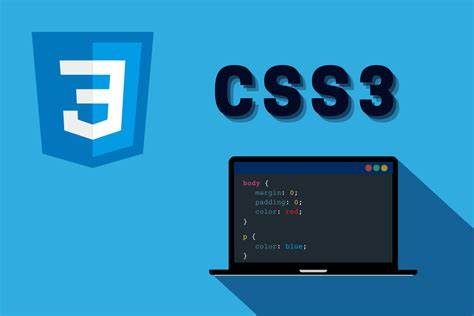

Estiliza los enlaces de navegación (<a>) dentro de una barra de navegación (<nav>) de modo que el color cambie cuando el usuario pase el mouse y estén subrayados solo cuando se hacen clic.
Crea una lista (<ul>) donde los elementos se desvanezcan cuando el mouse está sobre ellos y cambien de color cuando se seleccionan.
Haz que las imágenes (<img>) se desenfoquen ligeramente cuando el usuario pasa el mouse sobre ellas y se vuelvan a enfocar cuando se hace clic en ellas.

Estiliza los campos de entrada de un formulario (<input>, <textarea>) para que tengan un fondo de color cuando se enfocan y muestren un mensaje de ayuda utilizando pseudoelementos.
Estiliza las filas impares y pares (<tr>) de una tabla (<table>) de manera diferente, utilizando pseudoclases, como colores de fondo alternantes.
Cabecera 1
Cabecera 2
Cabecera 3
Cabecera 4
Elemento 1
Elemento 2
Elemento 3
Elemento 4
Elemento 5
Elemento 6
Elemento 7
Elemento 8
Elemento 9
Elemento 10
Elemento 11
Elemento 12
Crea una lista (<ul>) donde cada elemento tenga un icono diferente antes del texto, utilizando pseudoelementos ::before.